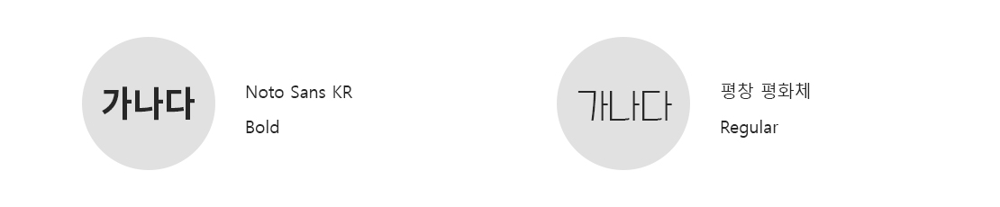

Typography
올리브영의 깔끔한 느낌으로 Noto Sans KR을 사용하고, 포인트를 주기위해 평창 평화체를 활용했습니다.
Logo
올리브영의 기존 심볼컬러 '올리브 그린'과 '코럴 오렌지'는 그대로, 두 심볼 컬러가 만나는듯한올리브 모양의 심볼을 새롭게 디자인하여,
건강한 아름다움을 보다 생동감 있게 표현하였습니다.
올리브영의 브랜드 지정서체는 선명하고 확실하게 주목받기 위한 SB어그로 Medium체를 사용하여 독특한 곡선과 사선의 조합으로 주목도를
높혀 올리브영의 심볼컬러를 더욱 더 생동감 있게 전달할 수 있도록 표현하였습니다.